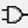

1. LTspice の使用方法
1.1 LTspice の起動
デスクトップにある LTspice のアイコン をダブルクリックしてソフトを起動してください。これにより、回路図作成用のウィンドウが表示されます。
1.2 回路ファイルのオープン
ツールバーの をクリックするか、キーボードショートカット Ctrl + N を使用して回路ファイルをオープンします。これにより、新しい回路図の作成が開始されます。ウィンドウが灰色の空白画面になり、回路図作成の準備が整います。
2. 回路の作成
2.1 トランジスタのシンボル配置
2.1.1 NMOSトランジスタの配置
ツールバーの「Select Component Symbol」ボタンをクリックし、コンポーネントリストから「nmos4」(NMOSトランジスタ)を選択します。選択後、回路図上でクリックして NMOS を配置します。
2.1.2 パラメータ設定
NMOSトランジスタのシンボル上にカーソルを置き、右クリックしてパラメータ設定ウィンドウを表示します。以下のパラメータを入力します。
- Model Name:
- 使用するモデルの名前を指定します。今回は「N_1u」と設定します。モデルは MOSFET の電気的特性を決定するものであり、シミュレーション結果に影響を与えます。
- Length (L):
- トランジスタのチャネル長を指定します。単位は「µm (マイクロメートル)」で、ここでは 1u に設定します。
- Width (W):
- トランジスタのチャネル幅を指定します。単位は「µm」で、ここでは 10u に設定します。チャネル幅を大きくすることで、同じゲート電圧下で流れる電流が増加します。
- Drain Area (AD):
- ドレイン端の面積を指定するオプションです。通常は空白で問題ありませんが、詳細な寄生パラメータを考慮したい場合に設定します。
- Source Area (AS):
- ソース端の面積を指定するオプションです。こちらも通常は空白で構いません。
- Drain Perimeter (PD):
- ドレイン端の周囲長を指定します。空白で問題ありませんが、詳細な解析で必要となることがあります。
- Source Perimeter (PS):
- ソース端の周囲長を指定します。通常は空白で問題ありません。
- No. Parallel Devices (M):
- 同じ MOSFET を並列に配置する数を指定します。ここでは1台しか使用しないため、空白のままで問題ありません。
これらの設定が完了したら、「OK」を押して設定を反映させます。
3. DC 解析の準備
3.1 グランドの配置
ツールバーのグランドアイコン をクリックして回路図にグランドを配置します。ショートカットキーはGです。
3.2 電源の配置
電圧源を追加するには、ツールバーの「Select Component Symbol」アイコン  をクリックするか、ショートカットキー F2 を使用してコンポーネントリストから選びます。選択した電圧源を回路に配置します。
配置した電源のシンボルを右クリックすると、以下のようなパラメータ設定ウィンドウが表示されます。
- DC value (V):
- 電源として供給する直流電圧の値を入力します。V1: 0V, V2: 0V
- Series Resistance (Ω):
- 電源に直列に接続される内部抵抗を設定するオプションです。通常は空白のままで問題ありませんが、内部抵抗を持たせる必要がある場合に使用します。
- OKボタン:
- 設定を確定して回路に反映させます。
- Cancel ボタン:
- 変更を破棄してウィンドウを閉じます。
- Advanced ボタン:
- AC 解析やパルス信号など、詳細な電源設定を行うためのオプションです。通常のDC解析では使用しません。
3.3 配線
3.3.1 配線の接続
配線はツールバーの「Wire」アイコン をクリックして行います。ショートカットキー F3 を使用しても配線を開始できます。回路内の各部品を正しく接続し、特に電源とグランドの接続が正しいか確認してください。
4. シミュレーション設定
4.1 シミュレーションコマンドの編集
メニューバーから Simulate > Edit Simulation Cmd を選択します。この操作は、ショートカットキー Ctrl + E でも実行できます。次に表示される「Edit Simulation Command」ウィンドウで、シミュレーションのパラメータを設定します。
4.2 DC Sweep の設定
- 1st Source (V2)の設定:
- 最初に、VDSの電圧をスイープするために、1st Sourceを設定します。以下の値を入力します。
- Start value: 0
- Stop value: 5
- Increment: 0.05
この設定では、VDSの電圧を 0V から 5V まで、0.05V 間隔でスイープします。これにより、VDSがシミュレーション中に連続的に変化し、トランジスタの動作特性を解析することができます。
- 2nd Source (V1)の設定:
- 次に、VGSの電圧をスイープするために、2nd Source を設定します。値は以下の通りです。
- Start value: 0
- Stop value: 5
- Increment: 1
この設定では、VGSの電圧を1V 間隔で0V から 5V までスイープします。VGSが 1Vずつ変化することで、異なるゲート電圧条件下でのトランジスタの動作を観察できます。
4.3 シミュレーションコマンドの確認
設定が完了すると、以下のようなシミュレーションコマンドがウィンドウ下部に表示されます。
.dc V2 0 5 0.05 V1 0 5 1コマンドの説明: このコマンドは、VDS (V2)を0V から 5V まで 0.05V 刻みでスイープし、同時にVGS (V1)を 0V から 5V まで 1V 刻みでスイープすることを意味しています。これで、VGS と VDS の変化に基づくトランジスタの特性がシミュレーションできます。
5. 回路ファイルの保存
回路を作成したら、シミュレーションを実行する前に必ず回路ファイルを保存します。以下の手順で保存を行います。
5.1 保存の手順
File > Save As を使用し、必ず ドキュメント > LTspice 実習フォルダに保存してください。ツールバーの「保存」ボタンを使用せず、必ず File > Save As を使用して保存を行うようにしてください。
5.2 ファイル名の命名規則
- ファイル名は指定された形式に従ってください。例えば、「N_1u.asc」など、実習ごとに指定されたファイル名を使用します。
- 注意:自動生成される Draft○.asc などのファイル名は使用しないようにしましょう。これを防ぐために、File > Save As から手動でファイル名を入力して保存することが重要です。
5.3 保存後の確認
- 保存した回路図ファイルが指定のフォルダ内に正しく保存されているか確認します。これを怠ると、次回の実習時に正しいファイルが見つからず、作業が中断されることがあります。
5.4 変更後の保存
回路を変更した場合、必ず再度保存を行いましょう。誤ったファイルを残してしまうと、後から再利用する際に問題が発生します。
6. DC 解析の実行
作成した回路図と設定したシミュレーション条件に基づいて、DC解析を実行します。DC解析では、指定した電圧源(V1, V2)のスイープによる回路の動作を確認します。
6.1 シミュレーションの開始
6.1.1 シミュレーションの実行
ツールバーの「Run」ボタン をクリックするか、F9 キーを押してシミュレーションを開始します。
6.1.2 シミュレーション結果の確認
シミュレーションが正常に実行されると、波形ビューワーが自動的に開きます。ここで、回路内の各端子や要素の電圧や電流を確認することができます。
6.2 シミュレーション結果の確認
今回は、MOSFET のドレイン電流 IDS を確認することが主な目的です。トランジスタの動作を観察するため、プローブを正しい位置に当てて、ドレイン電流の変化を測定します。
6.2.1 プローブの使用方法と見た目の違い
シミュレーション結果を確認する際、プローブの使い分けが重要です。
- 電圧プローブ:
- 電圧プローブは、回路上の任意のノードで使用できます。カーソルを回路図上の端子(ノード)に合わせると、電圧プローブの形状に変化します。
- 形状:電圧計のようなアイコンに変わります。
- 表示色:通常、赤色で表示されます。
- 電流プローブ:
- 電流プローブは、部品や素子の端子部分や配線部分でのみ表示されます。カーソルを部品の端子に合わせると、電流プローブの形状に変わります。
- 形状:電流クランプのようなアイコンに変わります。
- 方向:矢印が表示され、ホット側からコールド側に向かって電流の流れを示します
6.2.2 今回のプローブ位置と目的
今回は、ドレイン電流 IDs を測定するために、以下の位置にプローブを当てます。
- ドレイン端子に電流プローブを当てる:
- ドレイン端子に電流プローブを当てて、ドレインを流れる電流を測定します。
- 電流プローブは、トランジスタのドレインと電源の間に接続された配線部分に配置します。このプローブを使用することで、電源からドレインを流れる電流がシミュレーション結果に反映されます。
- ソース端子の確認:
- ソース端子がグランドに接続されていることを確認します。ソース端子に電流が正しく流れるかどうかは、シミュレーション結果の信頼性を高めるために重要です。
6.2.3 グラフの読み取り
波形グラフを確認し、設定した VGS と VDS に対するトランジスタのドレイン電流 IDS の動作を評価します。グラフ上には、VDS(ドレイン - ソース間電圧)と IDs(ドレイン電流)のプロットが表示され、それぞれの関係性を観察することができます。ドレイン電流がスイープされる VDS に応じてどのように変化するか、また、正しい結果が得られているかを確認します。